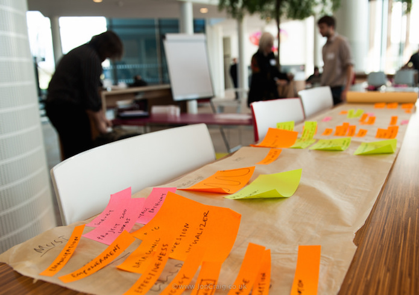

ODI Programme Manager Briony Phillips outlines some of the challenges and trickier aspects of innovating with open data, and suggests ways to overcome them
 The experiences of the Open Data Challenge Series teams have helped unpick and illustrate a number of issues in using open data. CC BY 2.0, uploaded by [Open Data Institute](https://www.flickr.com/photos/ukodi/14112182130/in/photolist-nv3C61-nMf1SM-qmwmgr-7b1em2-gFapdB-gFbhKT-gFatim-nv3mkn-nMndi9-nMf1qp-nPjzct-nMf2gx-apL9WG-e36bek-7aZywZ-7aUPJF-7aZK1K-nMuhXN-fceSRS-7aWEBS-nFovfp-nEhbqa-nXp41s-nVtbP1-nEhr5S-nXS4Mg-9NGKrb-9NEtYQ-nXvGSF-nFnHLu-nZDwsH-o1fKj4-nXpPPN-9S1To-9NAsCc-nUJgKE-nYtmKV-nVtckG-nFYY11-nFYJCv-nXp4Ms-nYmJcU-nEhiGJ-nF2i1C-pGCPj5-onYaFT-om1moy-ojc4cG-o4Kb4q-o4K2rB “Open Data Institute").
Over the past two years, in response to specific sector-based social challenges, nearly 150 product and service ideas have been proposed as part of the first ever Open Data Challenge Series (ODCS).
These teams have embraced the opportunity to solve social challenges by using a new raw material: open data. And, in return, data owners and publishers have seen their collective challenges solved in creative ways using data in ways they didn’t imagine, their data quality and access improved thanks to engagement with a new community of experts and their social and economic impact extended thanks to a new ecosystem of open data entrepreneurs.
As a by-product of this process, the experiences of these teams have helped us unpick and illustrate a number of issues in using open data. My hope is that this blog will go some way to help organisations across the public, third and private sectors to release their data and embrace the opportunity to ‘outsource innovation’.
Technical challenges
Technical challenges aren’t often obvious to data owners/publishers, and don’t become clear until a dialogue is opened up with innovators/reusers. While we actively encouraged all our participants to engage directly with data publishers, this certainly wasn’t a standard, for innovators or for data holders!
Data sources are often unreliable – they might not continue to be released, the metadata might be missing or the licence not shared. We explored these challenges, and helped our participants overcome them through the information in this related blog. To improve this for future challenges, data owners could consider creating an open data certificate for their data – to provide easy access to all the relevant information and recommendations for improvement.
Data sources are often inconsistent in data model, format and content across different points in time or geography. For example, Census 2011 data – one of the greatest examples of quality open data – is published separately by England and Wales, Scotland and Northern Ireland. They sometimes use different data models and sometimes simply do not offer the same data. Many innovators would benefit from greater coordination between relevant departments and authorities to make the data more consistent.
Many institutions don’t keep the innovative potential of open data in mind when they release it. Instead, they work with academics or others, not innovators in mind, and sometimes not obviously thinking of the needs of the reuser at all, so the format is less accessible for innovators. This is often easily solved, as we found with the Heritage and Culture challenge in which the British Museum were able to improve access to their artefacts data with some simple feedback from innovators. Our open data consumer checklist gives you an insight into the types of question and issues that consumers will have.
The APIs built by institutions don’t necessarily function well enough for modern day apps – our innovators have experienced unreliable servers, a lack of guaranteed service and frequently missing documentation. This challenge is easily resolved by data publishers providing data downloads alongside their APIs.
Inconsistencies within sectors and industries
There is a lack of collaboration and consistency within sectors to release data in a consistent standard. Not only that, but innovation would be far easier if there were industry-wide agreements regarding the core datasets that all parties will release, for example if all housing associations were to release data on tenant group size or stock floor space. Across sectors, there is also a great deal of inconsistency around the quality and volume of data. As part of the process our fabulous data scientist did a quality assessment of a core list of datasets for each challenge which helped uncover those sectors where the quality and quantity of data wasn’t so hot! You can access the data resources from the challenge pages on the Nesta website: http://www.nesta.org.uk/open-data-challenge-series
Missing data
Every challenge theme we considered had a key dataset that was not yet available and that would be of great value in answering the social issues that we were grappling with. Often these datasets of value are also perceived to be of highest ‘risk’ for the releasing organisation. It became clear through the challenge process that, when used in the right way, these ‘high risk’ datasets can be of great use even when aggregated and anonymised (such as the National Pupil Database from the Department for Education) – so perhaps there are ways of bringing this data into the open while minimising the risk associated with it. The ODI has recently developed a data spectrum to help data owners consider the best way to release data – considering the different degrees of ‘openness’. Just in case the owners are reading, these datasets would be very helpful next releases!
Crime and Justice – data on the items stolen in a specific geographic area, our winner CheckThatBike is accessing this data via FOI requests, but opening it up would make life far easier.
Education – we found this to be in pretty good order though simplified access to the aggregated and anonymised NPD would be a time saver for many startups. Linking the Education and Jobs challenges was a shared need for data showing the links between school pupils and where they go afterwards. While work is underway to link to Higher Education data, it would be hugely valuable to show links to jobs data. In addition, a new dataset that would be of great value in providing timely support to students it termly teacher assessment (tracking) data. End of key stage assessments offer some insight and if termly data is too great a task of data collection, then annual data, especially for year 3,4 and 5 kids would be very useful.
Energy and Environment – the Energy Performance Certificate (EPC) data owned by DCLG was asked for time and again and continues to be asked for long after the challenge has finished.
Food – nutritional information on foods is simply not comprehensive enough. There are small organisations like Open Food Facts working hard to crowd source this information but I wonder what role supermarkets and retailers could play in expediting the process. Price paid data and provenance information was also often asked for but very difficult to find, particularly as the most useful information would come from commercial organisations.
Housing – the lack of land ownership and planning data significantly influenced our choice of challenge question and would be a very useful addition for future challenges.
Heritage and Culture – the lack of a single source dataset for heritage and culture event/opening times across all institutions was frustrating for many teams. Pleasingly one of our finalists RabbleDays plans to create this dataset as part of their service (to help families volunteer at heritage institutions) – but this will rely on them finding some funding.
Jobs – the Valuations Office Agency (an executive agency, sponsored by HM Revenue & Customs which gives the government the valuations and property advice needed to support taxation and benefits) data is expensive to access. It would be great to have a whole data release including vital information such as commercial floor area. There was also much conversation about Standard industrial classification (SIC)/Standard Occupational Classification (SOC) codes and whether they are fit for wider purpose. Finally Universal jobs match from DWP was felt to be less usable than much of the other data, though unlike the other areas we know that they have plans to improve this!
If you’re a data owner or publisher reading this, I can only encourage you to embrace the challenges that we’ve put in the spotlight here, and release more data to unleash its innovative potential. By outsourcing innovation through challenge prizes such as the Open Data Challenge Series, you are supporting the birth of a new generation of startups, and enabling greater community-led innovation, which can only benefit your relationship with your customers, colleagues, citizens and friends and the quality of your data.
Beyond the data, we uncovered many more insights around the barriers to innovating with open data – such as the business models that are most likely to deliver success or the lack of funding for those stuck in the valley between seed funding and scaling, but those are for another day.
In the meantime, we would love to run another set of challenges – and to work more closely with data owners to help them open their data with innovators in mind. If you are interested to find out more about what good quality open data looks like, do consult the ODI guide on publishing open data, take a look at this blog which includes links to our data assessments, read about our winners and methodology in the ODCS Handbook or get in touch with me if you’d like to run a challenge in partnership with us.
Briony Phillips is a Programme Manager at the ODI. Follow @BrionyPhi11ip*s and @ODChallenges on Twitter.
If you have ideas or experience in open data that you'd like to share, pitch us a blog or tweet us at @ODIHQ.